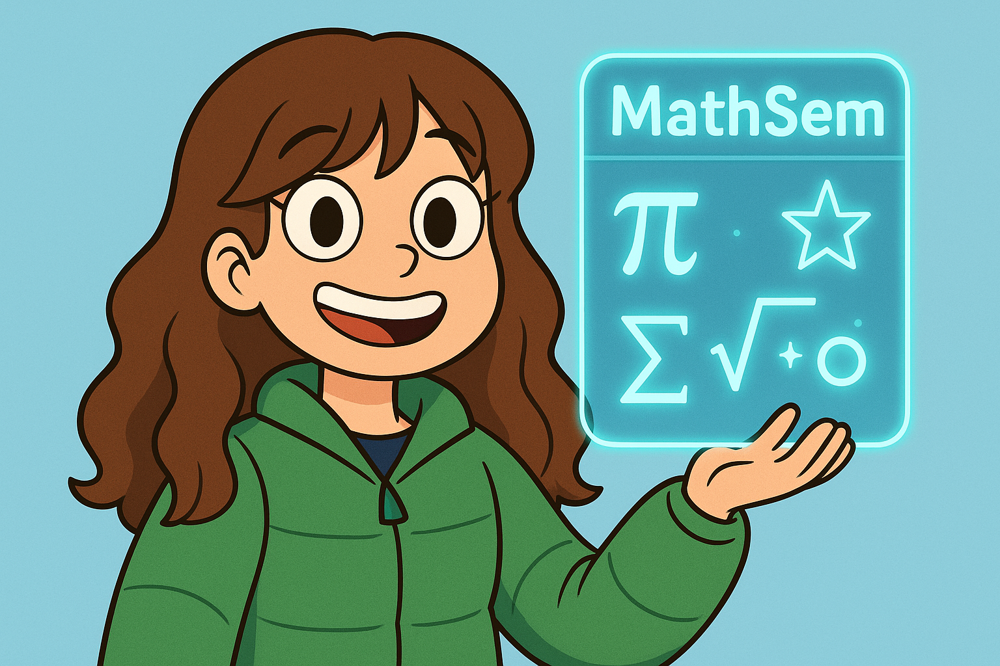

Изучение алгебры логики и теории множеств

Этот этап стал фундаментом всего проекта. Мы глубоко изучили
логические операции (конъюнкцию, дизъюнкцию, отрицание), законы де
Моргана и основные понятия теории множеств. Особое внимание уделили
применению этих знаний в программировании - созданию логических
выражений и работе с множествами данных. Полученные знания легли в
основу алгоритмов нашей программы, позволяющей строить и
анализировать логические формулы. Мы также исследовали, как эти
математические концепции применяются в проектировании баз данных.
03.02 - 24.02
Распределение ролей студентов первого курса
Команда разделилась на три специализированные группы. Первая группа
"Программисты C++" занялась разработкой ядра программы и алгоритмов
на C++, реализующей логические операции. Вторая команда
"Разработчики сайта и интеграции приложения на C++ с БД" отвечала за
интеграцию базы данных MySQL с веб-интерфейсом через Java-backend.
Третья группа "Разработчики сайта и БД" разрабатывала дизайн и
Front-end часть на HTML/CSS/JavaScript. Такое разделение позволило
параллельно вести разработку разных компонентов системы, регулярно
синхронизируя работу на общих собраниях.
24.02
Разработка прототип сайта в Figma
На этом этапе мы создали детализированные макеты для десктопной
(1920px) и мобильной (375px) версий. Прототип включал: главную
страницу с описанием проекта, страницу о проекте, страницу поддежки
и связи с разработчиками, страницу ресурсов, раздел с теорией и
личный кабинет пользователя. Особое внимание уделили UX: продумали
навигацию, визуальную иерархию элементов, цветовую схему. В Figma
настроили компоненты и авто-лейауты для адаптивного дизайна, что
значительно ускорило последующую верстку.
25.02 - 25.03
Верстка страниц сайта по прототипу
Используя HTML5 и CSS3, мы реализовали адаптивную верстку по макетам
из Figma. Применили Flexbox и Grid для сложных раскладок, добавили
CSS-анимации для интерактивных элементов. Для конструктора формул
использовали SVG-графику. Настроили медиа-запросы для корректного
отображения на экранах от 320px до 1920px. Особое внимание уделили
кросс-браузерности (Chrome, Firefox, Edge) и валидности кода
(проверка через W3C Validator).
25.03 - 30.04
Интеграция БД в сайт через Backend
Мы реализовали: 1. Систему регистрации/авторизации (Java + MySQL),
2. Хранение пользовательских формул в нормализованной БД (3NF), 3.
REST API для обмена данными между фронтендом и ядром на C++. Для
безопасности использовали подготовленные SQL-запросы и хеширование
паролей (bcrypt). Настроили асинхронную отправку данных через AJAX.
Для C++-части разработали модуль взаимодействия с БД через Java, что
позволило сохранять историю операций каждого пользователя.